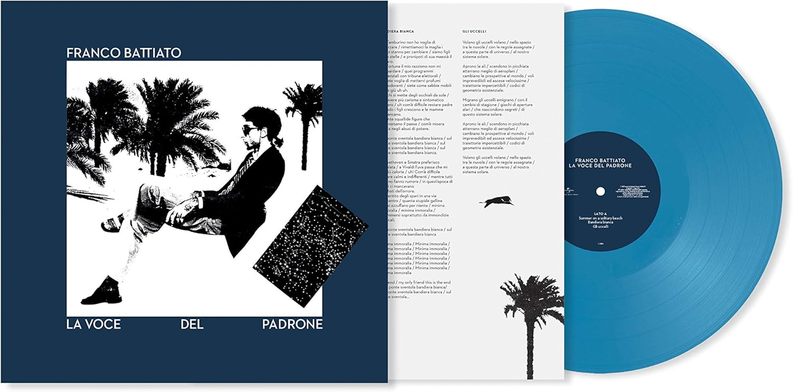

ALBUM
La voce del padrone, pubblicato nel 1981, è uno degli album più iconici della musica italiana e il disco che ha portato Franco Battiato a un successo enorme. Ma non è solo un successo commerciale — è un vero punto di svolta: per la prima volta in Italia, un artista riesce a rendere pop qualcosa di colto, profondo e spirituale, senza risultare elitario o difficile da ascoltare.
Fino a quel momento, Battiato era noto per la sua musica sperimentale, spesso considerata di nicchia. Con questo album, però, riesce a trovare un linguaggio nuovo: testi ricchi di riferimenti filosofici, religiosi, letterari e politici, messi dentro melodie leggere e accessibili, grazie anche alla collaborazione con Giusto Pio, musicista classico che ne cura gli arrangiamenti. Il risultato è qualcosa di unico: canzoni apparentemente leggere, che però parlano di ricerca interiore, disillusione sociale, desiderio di autenticità.
Il titolo, La voce del padrone, è una citazione ironica dalla famosa etichetta discografica inglese His Master's Voice, ma anche una riflessione critica sul controllo e l’autorità — un tema molto caro a Battiato.
Ogni brano è un piccolo universo. Summer on a Solitary Beach apre l’album con la sua atmosfera sospesa, continua con Bandiera Bianca criticando la cultura di massa, piena di riferimenti ironici alla musica e alla società. Gli uccelli è una poesia in musica sulla libertà e il linguaggio limitato dell’uomo. Cuccurucucù è un collage brillante di titoli e frasi di vecchie canzoni, pieno di nostalgia e gioco. Segnali di Vita è una meditazione esistenziale sull’assenza di movimento apparente, eppure su ciò che pulsa sotto la superficie delle cose. Centro di gravità permanente è una riflessione sul bisogno di stabilità interiore e Sentimiento Nuevo, che celebra la sensualità come forma di verità spirituale.
I suoni sono dominati da sintetizzatori e arrangiamenti elettronici, ma non freddi: Battiato riesce a farli vibrare di umanità. Il linguaggio è misto, tra italiano e inglese, colto e semplice allo stesso tempo.
Curiosamente, nessuna delle canzoni fu pubblicata come singolo promozionale. Eppure l’album esplose, diventando il primo LP italiano a superare il milione di copie vendute. Il pubblico, semplicemente, capì che stava ascoltando qualcosa di nuovo, di vero, di universale.
In breve, La voce del padrone è molto più di un disco pop. È un viaggio tra pensiero, ironia e melodia, che ha dimostrato che si può parlare di cose profonde con leggerezza, e farlo arrivare a tutti. È ancora oggi un riferimento per chiunque voglia fare musica che sia sia intelligente che emozionante.